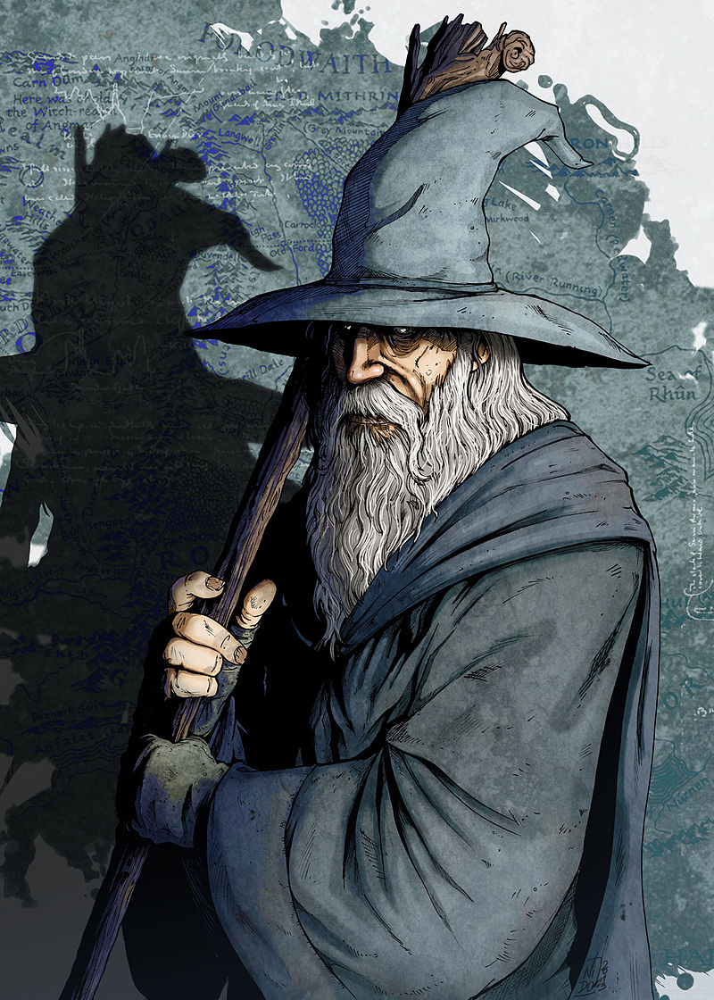
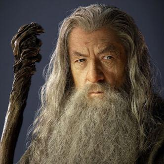

Gandalf
espírito angelicalGandalf é um Mago Istari, pertencente à raça dos Maiar, espírito angelical do mundo tolkienano, e costumava andar com Nienna com quem aprendeu a paciência e a compaixão (Silmarillion), mas diz-se que era conselheiro de Irmo Lórien. Foi à Terra-média, incorporado um velho, para ser um dos conselheiros dos homens e impedir que a escuridão voltasse.
Desde que chegou à Terra-média, Gandalf sempre teve um interesse especial pelos Hobbits por achar que "eles eram feitos de um material mais resistente do que aparentavam". Os acontecimentos narrados em O Hobbit e em O Senhor dos Anéis provaram que ele estava correto.
Gandalf tem participação decisiva no Conselho de Elrond que decidiu o destino do Anel. Sua opinão de que a única solução era a destruição do Um foi aceita por todos. Ele então lideraria uma comitiva que levaria o Anel e Frodo que se ofereceu mais uma vez para levá-lo até a Montanha da Perdição para ser lançado no seu interior, nas Fendas da Perdição. Essa seria a única forma de destruir o Anel.
Enquanto Gandalf conduzia a Comitiva do Anel, ele se deparou, em um dos salões dos Anões de Moria, com um Balrog, a Ruína de Durin, para nós um demônio do mundo antigo (uma referência a Primeira Era) que eram os maiores servos de Morgoth (Melkor), o antigo senhor de Sauron. Travando uma curta luta, ele acaba caindo juntamente com o seu adversário na escuridão de Khazad-dûm (Khazad-dûm é como os anões chamam Moria, em seu idioma (Khuzdûl)).
"Muitos que vivem merecem a morte. E alguns que morrem merecem viver. Você pode dar-lhes vida? Então não seja tão ávido para julgar e condenar alguém à morte."
Gandalf
- Nascimento: Criado antes da formação de Arda na Ainulindalë, foi para a Terra-média no ano 1000 da 3ª Era do Sol
- Morte: Imortal, retornou para Aman no ano 3021 da 3ª Era do Sol
- Raça: Istari
- Interpretado por: Ian McKellen
Eles lutam até caírem nas profundezas da montanha, que possuía um grande lago. Sem ter para onde ir, Gandalf se agarrou ao calcanhar do Balrog, e este encontrou fendas criadas por criaturas muito primitivas e foi subindo pela Escada Interminável até a Torre de Durin, no pico mais alto das Montanhas Sombrias, onde Gandalf tornou a lutar com ele até derrotá-lo. No entanto, a exaustão fez com que o mago morresse em seguida, indo para os Salões de Mandos, e o Vala (espírito "angelical" superior) permite a Gandalf que volte em um mesmo corpo para cumprir com a sua missão na Terra-média. Renasce, então, e é levado por Gwaihir, Senhor das Águias, até Lothlórien, onde Galadriel manda seus elfos o vestirem de branco, tornando-se Gandalf, o Branco.
Após uma luta épica, Sauron é derrotado. Depois da derrota de Sauron, Gandalf volta a Valinor, para onde leva Bilbo e Frodo, "doentes" por terem portado o Um Anel.